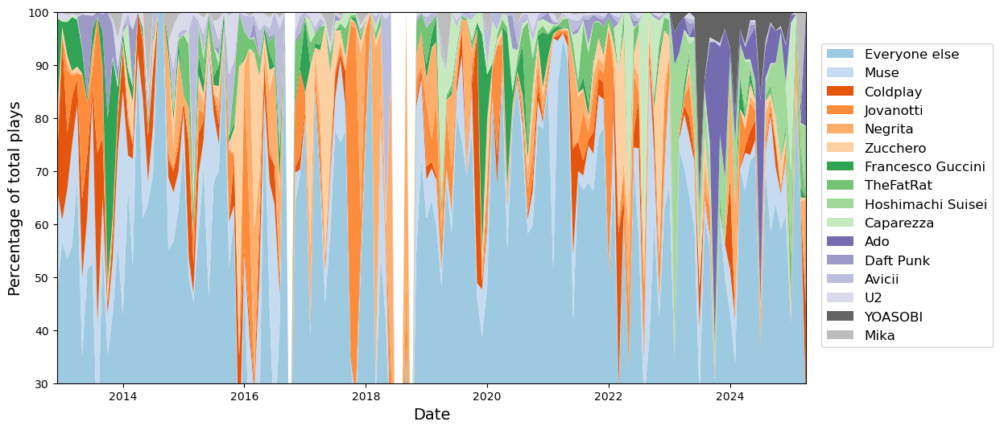
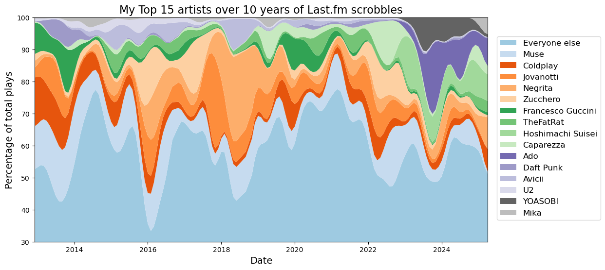
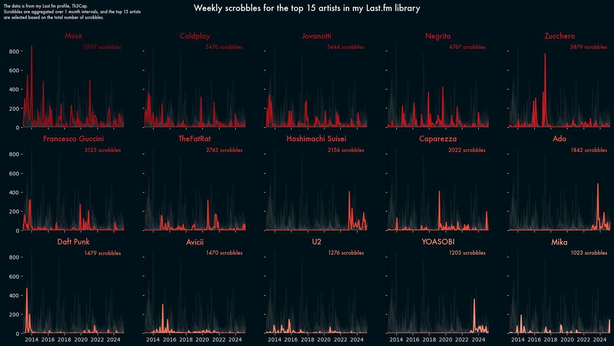

Following from my previous post on fetching my Last.fm scrobbles (check it out here if you want to see how I did it), I now have more than ten years’ worth of data and no idea what to do with it.
My first thought was to visualize my top artists, so I decided to experiment a bit with how I could do that. I recently found a very nice website (aptly) named The Python Graph Gallery, which has a lot of interesting examples of how to visualize data using Python.
Out of all the examples, there were a couple I found particularly interesting, so I decided to apply them to my own data. However, before getting to that point, I had to do a lot of data wrangling to get my data into the proper format.
This was all done using Python and the Polars library, so if you’re not interested in the plots but are curious to see some funky Polars code, do keep reading.
Preparing the data
First, I imported the various libraries I needed: - datetime was needed for some datetime manipulation. - matplotlib because I wanted to push it further than I usually do. - polars for all data manipulation. - skrub for some cleaning and for the TableReport (also, it’s the library I work on). - scipy.ndimage for data smoothing to make the first plot prettier.
from datetime import datetimeimport matplotlib.pyplot as pltimport numpy as npimport polars as plfrom skrub import Cleaner, TableReportfrom scipy.ndimage import gaussian_filter1d
First, I read the data from the CSV file I generated in the previous post, then I pass it to the Cleaner class from skrub to clean it up a bit.
Starting from skrub version 0.6.0, the Cleaner has the datetime_format argument, which I am using here to parse directly the timestamp without having to use polars.
Then, I use the TableReport to look at the data and see what it looks like.
No columns match the selected filter: . You can change the column filter in the dropdown menu above.
Column
Column name
dtype
Is sorted
Null values
Unique values
Mean
Std
Min
Median
Max
0
uts
Int64
False
0 (0.0%)
124053 (99.6%)
1.54e+09
1.17e+08
1.36e+09
1.56e+09
1.75e+09
1
utc_time
Datetime
False
0 (0.0%)
118752 (95.3%)
2012-12-26T01:16:00
2025-04-27T14:10:00
2
artist
String
False
0 (0.0%)
2751 (2.2%)
3
artist_mbid
String
False
30448 (24.4%)
1649 (1.3%)
4
album
String
False
1810 (1.5%)
5379 (4.3%)
5
album_mbid
String
False
55483 (44.5%)
2619 (2.1%)
6
track
String
False
0 (0.0%)
10628 (8.5%)
7
track_mbid
String
False
51923 (41.7%)
5713 (4.6%)
No columns match the selected filter: . You can change the column filter in the dropdown menu above.
To construct a list of column names that you can easily copy-paste
(in the box), select some columns using the checkboxes next
to the column names or the "Select all" button.
The table below shows the strength of association between the most similar columns in the dataframe.
Cramér's V statistic is a number between 0 and 1.
When it is close to 1 the columns are strongly associated — they contain similar information.
In this case, one of them may be redundant and for some models (such as linear models) it might be beneficial to remove it.
Please enable javascript
The skrub table reports need javascript to display correctly. If you are
displaying a report in a Jupyter notebook and you see this message, you may need to
re-execute the cell or to trust the notebook (button on the top right or
"File > Trust notebook").
The TableReport is a pretty neat tool with a lot of features. In this case, I was particularly interested in the Stats tab, which shows various high-level statistics about each column in the table. Here, it immediately showed me that some columns include a lot of missing values: the artist_mbid column has about 24% missing values, while both the album_mbid and track_mbid columns have more than 40% missing values.
What’s the mbid? It’s the MusicBrainz Identifier, a unique identifier for each artist, album, and track in the MusicBrainz database.
Why does it matter? Because it allows me to link artists and tracks with the MusicBrainz database, which contains additional information about them, such as the genre, the release date, the country of origin, and so on. In other words, missing the mbid means I am missing out on a lot of additional information that I could use for new plots. This is a shame, and I already have plans on how to fix this.
In this post, however, I will focus on the artists, the tracks, and the timestamps of the scrobbles to take a look at the evolution of my favorite artists over the years. Originally, I wanted to include the genres as well, as they have a larger granularity and would therefore be easier to visualize, but the data dump I have does not include them, and even querying the Last.fm API did not help with filling in the gaps for most of the less popular artists in my library.
In any case, lets move on to the actual data wrangling.
Finding the top artists
I decided to extract the top 15 artists from the data based on the number of scrobbles to have some variety, while remaining able to plot all of them at the same time. I also want to treat them separately from all the other artists: this comes into play later for the stackplot.
top_k =15top_artists = ( df.group_by("artist") # group by artist .agg(pl.len().alias("count")) # count the number of scrobbles per artist .top_k(k=top_k, by="count") # get the top k artists)top_artists
shape: (15, 2)
artist
count
str
u32
"Muse"
11017
"Coldplay"
5470
"Jovanotti"
5444
"Negrita"
4767
"Zucchero"
3879
…
…
"Daft Punk"
1479
"Avicii"
1470
"U2"
1276
"YOASOBI"
1203
"Mika"
1023
Now for the nasty wrangling part. Since my objective is to visualize the evolution of my favorite artists over time, I can do this by counting the number of scrobbles per artist each month.
However, what I want from my stackplot is to show how many of the scrobbles in each month come from one of the top 15 artists, and how many come from the rest. For this, I need to find the fraction of scrobbles per month per artist. To avoid skewing the results in months where I listened to very few of the top artists, I will also include the total number of scrobbles for “everyone else” in the fraction.
df_prep = ( df.with_columns( pl.when(pl.col("artist").is_in(top_artists["artist"])) # check if artist is in top artists .then(pl.col("artist")) # keep the artist name .otherwise(pl.lit("Everyone else")) # otherwise label as "Everyone else" .alias("artist") # replace the artist column with this new one ))
Now that I have the top artists and “everyone else”, I can count the number of scrobbles per artist each month. For this, I first select only the artist and the timestamp columns, then I truncate the timestamp to the month, and finally I group the data by artist and month, counting the number of scrobbles for each group, i.e., for each artist in each month.
df_prep = (df_prep .select( [ pl.col("artist"), pl.col("utc_time").dt.truncate("1mo"), # truncate the time to the month ] ) .group_by(["artist", "utc_time"]) .agg(count=pl.len()) .sort(["utc_time", "count"]))df_prep
shape: (1_427, 3)
artist
utc_time
count
str
datetime[μs]
u32
"Mika"
2012-12-01 00:00:00
1
"U2"
2012-12-01 00:00:00
1
"Caparezza"
2012-12-01 00:00:00
2
"Zucchero"
2012-12-01 00:00:00
13
"Negrita"
2012-12-01 00:00:00
15
…
…
…
"Hoshimachi Suisei"
2025-04-01 00:00:00
53
"Coldplay"
2025-04-01 00:00:00
73
"Negrita"
2025-04-01 00:00:00
81
"Ado"
2025-04-01 00:00:00
87
"Everyone else"
2025-04-01 00:00:00
108
Each row in df_prep now contains the artist name, the month of the scrobble, and the number of scrobbles for that artist in that month.
Now, I want to calculate the fraction of scrobbles per artist each month, that is, how many of the scrobbles for a given month were made with the specific artist: this is what I want to put in the stackplot. Will it be a good choice? Looking back, it probably wasn’t.
In any case, for this I need to group the data by month to find the total number of scrobbles for each month, then add a new column where I store the fraction.
df_prep = df_prep.join( df_prep # self-join to add the total number of scrobbles per month .group_by("utc_time") # group by month .agg(pl.sum("count").alias("total_scrobbles")), # total number of scrobbles per month on="utc_time" ).with_columns( frac=pl.col("count") / pl.col("total_scrobbles") *100# calculate the fraction )df_prep
df_prep
shape: (1_427, 5)
artist
utc_time
count
total_scrobbles
frac
str
datetime[μs]
u32
u32
f64
"Mika"
2012-12-01 00:00:00
1
334
0.299401
"U2"
2012-12-01 00:00:00
1
334
0.299401
"Caparezza"
2012-12-01 00:00:00
2
334
0.598802
"Zucchero"
2012-12-01 00:00:00
13
334
3.892216
"Negrita"
2012-12-01 00:00:00
15
334
4.491018
…
…
…
…
…
"Hoshimachi Suisei"
2025-04-01 00:00:00
53
405
13.08642
"Coldplay"
2025-04-01 00:00:00
73
405
18.024691
"Negrita"
2025-04-01 00:00:00
81
405
20.0
"Ado"
2025-04-01 00:00:00
87
405
21.481481
"Everyone else"
2025-04-01 00:00:00
108
405
26.666667
Now I have a dataframe that contains all the information I need: for each month, I have the artists I listened to, the number of songs played, the number of total scrobbles in that month, and finally the fraction of scrobbles for each artist.
Getting a fixed order for my top artists
A small detail I wanted to get done was getting a fixed order for my artists, with the “Everyone else” label on top. This is easy to do:
Now for the final, and possibly worst part of the entire preparation: massaging the data into a format that should be easier to plot iteratively with the stackplot.
The rough idea is having a dictionary where each key is one of the top artists, and each artist is mapped to a list of values for each month (including the months in which I did not listen to them); then, plotting each artist separately becomes easier. Getting there, however, is anything but.
Which artists am I always listening to?
The main problem here is that no artist (other than the “Everyone else” label) was played every month since the start of the data collection:
So at the top we have Muse, Coldplay, Jovanotti and Negrita that showed up almost every month; even they, however, are missing for about one year throughout.
At the other end of the ladder sit Hoshimachi Suisei, Ado and YOASOBI, three Japanese singers that I discovered about two years ago, and that have been a staple of my playlists ever since. They’ll get their own post in due time.
Closing this small parenthesis to explain why there are a bunch of missing values, how did I deal with them?
First off, I defined a datetime range that started on the first month of data, and that finished at the end of the data range, with a point every month.
all_time = pl.DataFrame( {"time": pl.datetime_range( start=datetime(2012, 12, 1), end=datetime(2025, 4, 20), interval="1mo", eager=True, ) })# Defining the dictionaries to hold the data for the plotdict_frac = {}dict_abs = {}dict_cumulative = {}labels = []
Now the fun part. I group again by artist, and right join on the all_time range defined above. The result is having a new group that has a line for every month in the range, and null values on all rows where the artist is missing.
Then, I fill in the null values with 0’s (I could also fill in the artist name, but I’m not using it here).
I then fill each dictionary with a numpy array taken from each column, and conclude by sorting the dictionaries according to the order of artists defined before.
for gidx, g in df_prep.group_by("artist"): group = ( g.with_columns(pl.col("utc_time").dt.truncate("1mo")) .join(all_time, left_on="utc_time", right_on="time", how="right") .with_columns(pl.col("frac").fill_null(0), pl.col("count").fill_null(0)) ) dict_frac[gidx[0]] = group["frac"].to_numpy() dict_abs[gidx[0]] = group["count"].to_numpy() dict_cumulative[gidx[0]] = group["count"].to_numpy() labels.append(gidx[0])dict_frac = {k: dict_frac[k] for k in order}dict_abs = {k: dict_abs[k] for k in order}dict_cumulative = {k: dict_cumulative[k] for k in order}dict_total =dict(ranking.rows())
Whew. This was not pretty, but one of the positives of this approach is that now I have, for each of the top artists, three things I can play with, and plot: - for each month, the number of songs played - how much of my listening was monopolized by the artist - the cumulative number of scrobbles, showing me the evolution month by month
This is a lot of information! In the next section, I’ll use the first and second points, and in later posts I’ll explore the third.
Plotting the data
As explained just above, it’s time to put everything into something that’s “good to look at”. Whether I pulled that off, I’ll let the reader decide.
First attempt: stackplot
To start with, let’s try to prepare the stackplot without any smoothing.
x = all_time["time"].to_numpy()y = np.array(list(dict_frac.values()))cmap = plt.cm.tab20ccolors = cmap(np.linspace(0.1, 0.9, len(order)))fig, ax = plt.subplots(figsize=(12, 6))ax.stackplot( x, y, labels=order, colors=colors,)fig.legend(loc="center right", ncol=1, fontsize=12, bbox_to_anchor=(1.1, 0.5))ax.set_xlim(x[0], x[-1])ax.set_ylim(30, 100)ax.set_xlabel("Date", fontsize=14)ax.set_ylabel("Percentage of total plays", fontsize=14)
Text(0, 0.5, 'Percentage of total plays')

Oof. This does not look great. Better smooth it out.
Note: unfortunately, I lost track of whatever source I used for preparing the following snippet of code, but it definitely started in the stackplot section of the Graph Gallery linked before.
The gist of it is adding a gaussian filter to the data, so that most of the jaggedness is removed. I’m also removing any month that has no data at all using a mask.
Now I can use the matplotlib stackplot function to finally draw my data. Some labels to make the data pretty, but nothing particularly fancy to add here.
fig, ax = plt.subplots(figsize=(12, 6))ax.stackplot( x, y, labels=order, colors=colors,)fig.legend(loc="center right", ncol=1, fontsize=12, bbox_to_anchor=(1.1, 0.5))ax.set_xlim(x[0], x[-1])ax.set_ylim(30, 100)ax.set_xlabel("Date", fontsize=14)ax.set_ylabel("Percentage of total plays", fontsize=14)ax.set_title(f"My Top {top_k} artists over 10 years of Last.fm scrobbles", fontsize=16)

To be honest, I am not satisfied with this plot at all. It’s hard to read, the color palette is not clear and there isn’t a clear pattern to it. For example, having a color that’s related to the nationality of the artist would make it easier to pick on patterns (shame that the nationality is not readily available from the last.fm data…).
The only thing that can somewhat be gleamed is that some of the artists are far more consistent through the years, while others were more common at a certain point and then progressively fell off. Another thing that’s pretty clear is that a couple of years ago my tastes evolved pretty sharply, with Japanese singers taking up a far larger fraction of everything I was listening to.
Anyway, I am not happy with this plot, so I looked a bit more for alternatives and landed on something that ended up being far more satisfying.
Second attempt: multiple line chart
The second plot was heavily inspired by this plot from the gallery.
I really like that plot: it’s informative and shows the information in an interesting way. Moreover, I have never played around with facecolors and fonts, and that plot inspired me to try something different from the usual “default font on white background”.
For this plot, I’m only interested in the actual artists, no need to have “Everyone else” in the way.
# del dict_abs["Everyone else"]# Defining a new colormapcmap = plt.cm.Redscolors = cmap(np.linspace(0.3, 0.9, len(order))[::-1])# 15 subplots, one for each artist fig, axs = plt.subplots(3, 5, figsize=(20, 10), sharex=True, sharey=True)# changing the background colorbackground_color ="#001219"fig.set_facecolor(background_color)# Plotting each artist in its own subplotfor i, (k, v) inenumerate(dict_abs.items()):# Each plot has its own color color = colors[i]# Finding the right subplot ax = axs[i //5, i %5]# Setting the background color of each subplot (it's separate from the fig background) ax.set_facecolor(background_color)# reusing the same mask as before v = v[mask]# Plotting the current artist with the given artist ax.plot(x, v, color=color, zorder=3, linewidth=2)# Here I can set the font ax.set_title(f"{k}", color=color, fontsize=14, fontweight="bold", fontname="Futura")# fixing the x and y limits for the current subplot ax.set_xlim(x[0], x[-1]) ax.set_ylim(0, 900)# changing the color of the axes to fit the dark background ax.tick_params(axis="x", colors="white") ax.tick_params(axis="y", colors="white")# removing the top and right spines ax.spines['top'].set_visible(False) ax.spines['right'].set_visible(False)# Adding the total number of scrobbles in the top right corner ax.text(0.97,0.97,f"{dict_total[k]} scrobbles", ha="right", va="top", fontsize=10, color=color, fontname="Futura", transform=ax.transAxes, )# Plotting the other artists in grey in the backgroundfor _k, v in dict_abs.items():if _k == k:continue v = v[mask] ax.plot(x, v, color="grey", alpha=0.1)# Adding a main title and a descriptionfig.suptitle("Weekly scrobbles for the top 15 artists in my Last.fm library", fontsize=16, color="white", fontname="Futura",)desc ="""The data is from my Last.fm profile, Th3Cap. Scrobbles are aggregated over one month intervals, and the top 15 artists are selected based on the total number of scrobbles."""fig.text(0.1,0.98, desc, ha="left", va="top", fontsize=8, color="white", fontname="Futura",)

Now, this is a plot I am happy about. It might not be the most compact way to represent the data, but I don’t necessarily care. I really like the “dark mode” theme, I like the color map, and plotting the other artists in the background is a nice way to show indirectly how a specific artist compares to the competition on a given month.
It’s also interesting to see how some artists appear to be more consistent, while some others are more likely to be a fad that I go back to after some time.
Conclusions
This post took forever and a half to write, in no small part because of how disappointed I was in the stackplot and how annoying the data wrangling part was.
I am quite happy with the final plot, however, and at least now I have a way of representing the evolution of an artist over the years. I’m already working on another plot focusing specifically on Muse, and I hope I’ll get that one out much quicker than I did this.
In any case, thanks for sticking around until the end, and I hope you enjoyed the journey and maybe learned something from it.